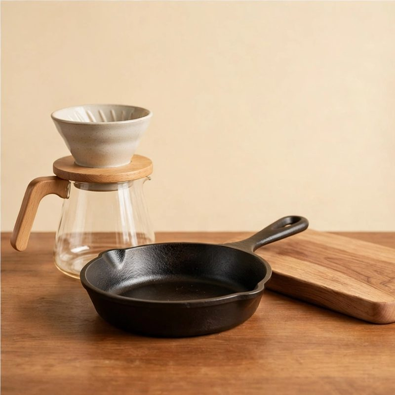
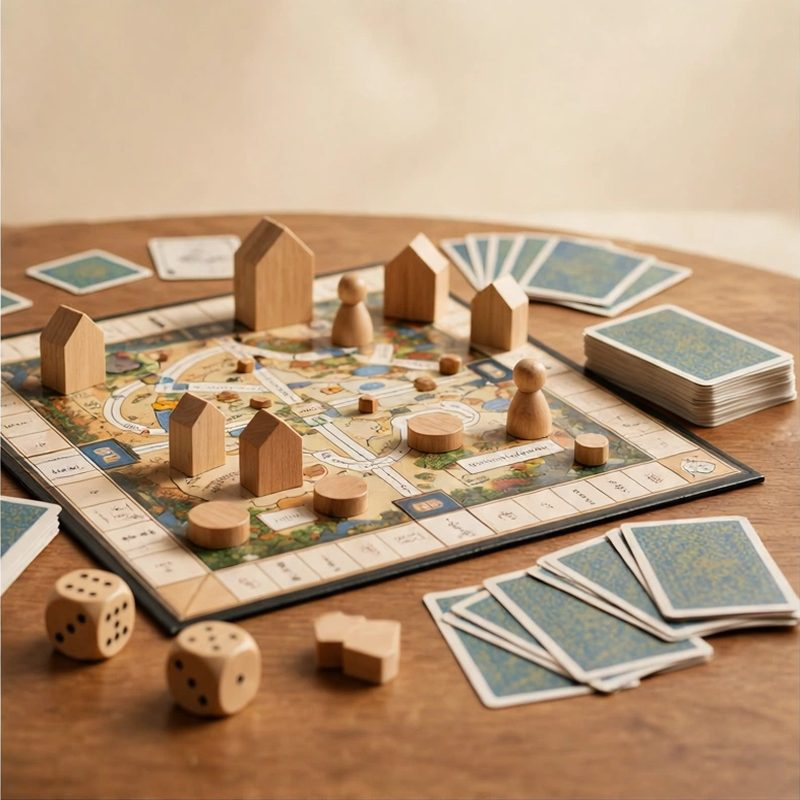
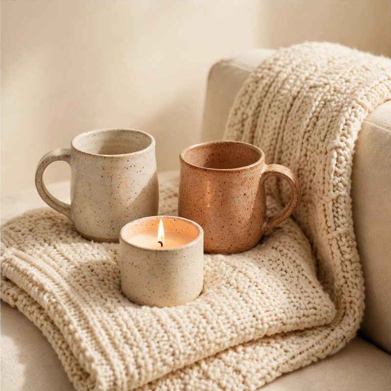

Secret Santa gift ideas under $25
Real picks from the same bank the draw uses. Grouped by what they are into.
Start your drawIn a draw, each person gets six ideas matched to their likes.
Start with what they are into
A good Secret Santa gift is small, personal, and easy to wrap.
Find their kind of thing below.
Prices move, so check the price where you buy.
For the cook

Pour-over coffee dripper with paper filters
Slow weekend coffee with no machine on the counter.
For the ritual of a slow morning, not another gadget.
Small-batch hot sauce trio
Three bottles with the heat levels labeled and tasting notes on the box.
A low-stakes way to discover a new favorite.
For the book lover

The year's most talked-about hardcover novel
The book everyone will be discussing in January.
A shared topic for your next phone call.
Clip-on rechargeable book light
Warm light, no batteries, and it does not disturb the other side of the bed.
For the reader who stays up too late.
For game night

1000-piece art jigsaw puzzle
A famous painting, one satisfying piece at a time.
For slow evenings and the dining table.
Premium playing cards, two decks
Plastic-coated and endlessly riffleable.
Upgrades every card night they host.
For the outdoors

Instant-read digital meat thermometer
Reads in two seconds. No more guessing at the grill.
For the griller who insists they can tell by touch.
Rechargeable headlamp
Bright, light, and no batteries to keep buying.
For early starts and late finishes.
For music lovers

Harmonica with beginner songbook
Fits in a pocket and learnable in an afternoon.
For the secretly musical.
Waterproof shower speaker with big buttons
Steam proof sound with buttons anyone can find half asleep.
Morning playlists and radio voices make short showers cheerful.
For cozy nights

Soy candle trio, seasonal scents
Three small jars that make the house smell like December.
Instant atmosphere with zero effort.
Microwave heated shoulder and neck wrap
A weighted wrap that warms in minutes and drapes where it aches.
Desk stiff shoulders loosen up during one evening news segment.
Ideas come matched in a draw
This page is the open shelf. The draw is the shortcut.
Add what each person likes when you set up the draw.
Each private link carries six ideas that fit the budget and their likes.
The ideas are picked on this device. Names and matches are stored on our server for the short links, in a form we can read.
Common questions
What is a good Secret Santa gift under $25?
Match it to what they are into: a small-batch hot sauce trio for the cook, a clip-on book light for the reader. Every idea on this page sits in the under-$25 band of the list of 212.
Do the gift ideas cost extra?
No. When you run a draw here, each person gets six gift ideas that fit the budget, free. The ideas come from the same bank as this page.
Do you sell these gifts?
No. Ideas are described in plain words, with no store links. Search the name anywhere you like to buy it. Prices move; every idea here sits in the under-$25 band of the bank.